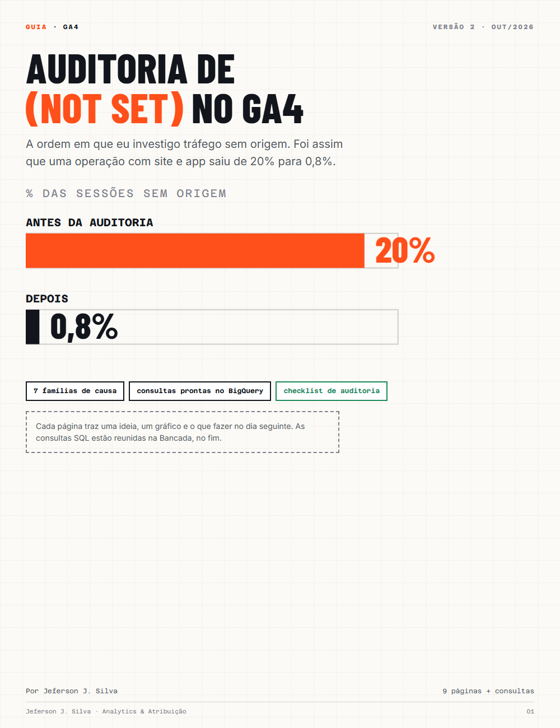

A ordem de investigação que levou uma operação de 20% para 0,8%. O que (not set) é e o que não é, as 7 famílias de causa, as consultas no BigQuery para achar cada uma e como provar que o número melhorou de verdade.

Quatro valores parecidos, quatro investigações diferentes.
(not set)O GA4 não recebeu o dado para aquela dimensão. É o assunto deste guia.
(direct) / (none)Recebeu a sessão sem referência nem campanha. Direto alto demais costuma esconder UTM perdida.
(other)O relatório agrupou valores por limite de linhas. No BigQuery o valor real aparece.
(data not available)O dado não está disponível para aquele período ou combinação.
Escopo importa: origem da sessão, origem do primeiro usuário, página de entrada e campanha do Ads são quatro problemas. Comece pela origem da sessão, que é a que decide verba.
Antes de corrigir qualquer coisa, tire três números: % de sessões, de compras e de receita em (not set).
A operação A parece pior olhando sessão. A B é a que está perdendo dinheiro de verdade.
Monte a tabela de sessões a partir do export do GA4 e tire o ponto de partida. Guarde com a data: é a sua linha de base.
Bancada · N1 e N2(not set) quase nunca é um erro só. É a soma de perdas pequenas, cada uma num ponto da jornada e com um dono diferente.
AGoogle Ads sem vínculo ou gclid perdido
BUTM incompleta
CSessão que começa sem page_view
DEvento de servidor sem a sessão
EConsentimento
FDomínios e checkout
GApp e site misturados
SintomaCampanha do Ads aparece como (not set); concentra em sessão com gclid.
ConfirmeN3, linha tem_gclid. E teste o redirect: curl -sIL "https://seusite.com.br/lp?gclid=teste123" | grep -i location
CorrijaVincule todas as contas, ligue o auto-tagging, preserve a query string nos redirects.
Sintomautm_source sem utm_medium; "Instagram", "instagram" e "ig" como fontes diferentes.
ConfirmeN3, linha utm_incompleta, e a lista de source e medium dos últimos 90 dias.
CorrijaTaxonomia escrita, gerador de links e um dono.
SintomaPrimeiro evento é scroll, vídeo ou evento próprio.
ConfirmeN3, coluna primeiro_evento, e N4.
CorrijaTag do Google no acionador de inicialização; eventos dependentes dela.
Sintoma% de (not set) nas compras bem maior que nas sessões.
ConfirmeN5.
CorrijaGuarde client_id e session_id no pedido e mande os dois no evento de servidor.
SintomaBuraco em analytics_storage = 'No'; queda junto com mudança no banner.
ConfirmeN6. Teste o banner aceitando, negando e ignorando.
CorrijaEstado padrão antes de qualquer tag; ad_storage, ad_user_data e ad_personalization mapeados.
Sintoma(not set) ou referral do gateway num host específico.
ConfirmeN3, coluna host.
CorrijaVários domínios na tag, gateway em referências indesejadas, user_id no login.
Sintoma(not set) concentrado em ANDROID ou IOS.
ConfirmeN3 separada por stream_id.
CorrijaApp e site separados. Instalação vem do MMP; reengajamento, de deep link com campanha.
(not set) volta quando ninguém responde por ele.
A tentação é corrigir a mais fácil. A ordem certa é a família que concentra mais receita em (not set), mesmo que dê mais trabalho.
Escreva um dono e uma data para cada família antes de começar.
A melhoria tem que aparecer numa série, não numa captura de tela. Anote no gráfico a data de cada correção.
(not set) que some porque o dado sumiu não é correção, é perda.
Se o (not set) caiu e a distância para o backend não mudou, você só trocou o rótulo do buraco.
Rode a série toda semana e compare as compras do GA4 com as do backend todo mês.
Bancada · N7Troque projeto.analytics_123456789 pelo dataset da sua propriedade. O campo session_traffic_source_last_click entrou no export em 2024; em exports antigos, reconstrua a origem com collected_traffic_source.
-- Base de sessões com os sinais de diagnóstico (export do GA4 no BigQuery)
-- Troque `projeto.analytics_123456789` pelo dataset da sua propriedade
CREATE OR REPLACE TABLE `projeto.auditoria.sessoes_notset` AS
WITH eventos AS (
SELECT
event_date,
user_pseudo_id,
(SELECT value.int_value FROM UNNEST(event_params) WHERE key = 'ga_session_id') AS session_id,
event_name,
event_timestamp,
platform,
stream_id,
device.category AS device_category,
privacy_info.analytics_storage AS analytics_storage,
collected_traffic_source.manual_source AS utm_source,
collected_traffic_source.manual_medium AS utm_medium,
collected_traffic_source.gclid AS gclid,
session_traffic_source_last_click.cross_channel_campaign.source AS sessao_source,
session_traffic_source_last_click.cross_channel_campaign.medium AS sessao_medium,
(SELECT value.string_value FROM UNNEST(event_params) WHERE key = 'page_location') AS page_location,
ecommerce.purchase_revenue AS receita
FROM `projeto.analytics_123456789.events_*`
WHERE _TABLE_SUFFIX BETWEEN FORMAT_DATE('%Y%m%d', DATE_SUB(CURRENT_DATE(), INTERVAL 28 DAY))
AND FORMAT_DATE('%Y%m%d', DATE_SUB(CURRENT_DATE(), INTERVAL 1 DAY))
)
SELECT
user_pseudo_id,
session_id,
MIN(PARSE_DATE('%Y%m%d', event_date)) AS dia,
ARRAY_AGG(event_name ORDER BY event_timestamp LIMIT 1)[OFFSET(0)] AS primeiro_evento,
COUNT(*) AS n_eventos,
LOGICAL_OR(event_name = 'session_start') AS tem_session_start,
LOGICAL_OR(event_name IN ('page_view', 'screen_view')) AS tem_pageview,
LOGICAL_OR(gclid IS NOT NULL) AS tem_gclid,
LOGICAL_OR(utm_source IS NOT NULL AND utm_medium IS NULL) AS utm_incompleta,
ANY_VALUE(platform) AS platform,
ANY_VALUE(stream_id) AS stream_id,
ANY_VALUE(device_category) AS device_category,
MAX(analytics_storage) AS analytics_storage,
MAX(sessao_source) AS sessao_source,
MAX(sessao_medium) AS sessao_medium,
MAX(NET.HOST(page_location)) AS host,
COUNTIF(event_name = 'purchase') AS compras,
SUM(IF(event_name = 'purchase', receita, 0)) AS receita
FROM eventos
WHERE user_pseudo_id IS NOT NULL AND session_id IS NOT NULL
GROUP BY 1, 2;-- Ponto de partida: quanto do dado está sem origem
SELECT
COUNT(*) AS sessoes,
ROUND(100 * COUNTIF(IFNULL(sessao_source, '(not set)') = '(not set)') / COUNT(*), 1) AS pct_sessoes_not_set,
ROUND(100 * SUM(IF(IFNULL(sessao_source, '(not set)') = '(not set)', compras, 0)) / NULLIF(SUM(compras), 0), 1) AS pct_compras_not_set,
ROUND(100 * SUM(IF(IFNULL(sessao_source, '(not set)') = '(not set)', receita, 0)) / NULLIF(SUM(receita), 0), 1) AS pct_receita_not_set
FROM `projeto.auditoria.sessoes_notset`;SELECT
primeiro_evento, tem_session_start, tem_pageview, tem_gclid, utm_incompleta,
platform, analytics_storage, host,
COUNT(*) AS sessoes,
COUNTIF(IFNULL(sessao_source, '(not set)') = '(not set)') AS sessoes_not_set,
ROUND(100 * COUNTIF(IFNULL(sessao_source, '(not set)') = '(not set)') / COUNT(*), 1) AS pct_not_set,
SUM(compras) AS compras
FROM `projeto.auditoria.sessoes_notset`
GROUP BY ALL
HAVING sessoes >= 50
ORDER BY sessoes_not_set DESC
LIMIT 30;SELECT
primeiro_evento,
COUNT(*) AS sessoes,
ROUND(100 * COUNTIF(IFNULL(sessao_source, '(not set)') = '(not set)') / COUNT(*), 1) AS pct_not_set
FROM `projeto.auditoria.sessoes_notset`
GROUP BY 1
ORDER BY sessoes DESC;-- Compras sem session_id e compras em sessões de um evento só
WITH compras AS (
SELECT
user_pseudo_id,
(SELECT value.int_value FROM UNNEST(event_params) WHERE key = 'ga_session_id') AS session_id
FROM `projeto.analytics_123456789.events_*`
WHERE _TABLE_SUFFIX BETWEEN FORMAT_DATE('%Y%m%d', DATE_SUB(CURRENT_DATE(), INTERVAL 28 DAY))
AND FORMAT_DATE('%Y%m%d', DATE_SUB(CURRENT_DATE(), INTERVAL 1 DAY))
AND event_name = 'purchase'
)
SELECT
COUNT(*) AS compras,
COUNTIF(c.session_id IS NULL) AS compras_sem_sessao,
COUNTIF(s.n_eventos = 1) AS compras_em_sessao_de_1_evento
FROM compras c
LEFT JOIN `projeto.auditoria.sessoes_notset` s
ON s.user_pseudo_id = c.user_pseudo_id AND s.session_id = c.session_id;SELECT
PARSE_DATE('%Y%m%d', event_date) AS dia,
COUNT(*) AS eventos,
ROUND(100 * COUNTIF(privacy_info.analytics_storage = 'No') / COUNT(*), 1) AS pct_analytics_negado,
ROUND(100 * COUNTIF(user_pseudo_id IS NULL) / COUNT(*), 1) AS pct_sem_identificador
FROM `projeto.analytics_123456789.events_*`
WHERE _TABLE_SUFFIX BETWEEN FORMAT_DATE('%Y%m%d', DATE_SUB(CURRENT_DATE(), INTERVAL 90 DAY))
AND FORMAT_DATE('%Y%m%d', DATE_SUB(CURRENT_DATE(), INTERVAL 1 DAY))
GROUP BY 1
ORDER BY 1;SELECT
dia,
COUNT(*) AS sessoes,
ROUND(100 * COUNTIF(IFNULL(sessao_source, '(not set)') = '(not set)') / COUNT(*), 1) AS pct_not_set,
ROUND(100 * SUM(IF(IFNULL(sessao_source, '(not set)') = '(not set)', compras, 0)) / NULLIF(SUM(compras), 0), 1) AS pct_compras_not_set
FROM `projeto.auditoria.sessoes_notset`
GROUP BY 1
ORDER BY 1;30 minutos, ao vivo, nas suas plataformas. Você sai com os três problemas mais críticos de mensuração da sua operação. Sem compromisso.
jefersonjs.com.br · contato@jefersonjs.com.br
Fontes: ajuda do Google Analytics sobre (not set) e Consent Mode. Números do caso anonimizados.
Quer guardar para consultar depois? O guia completo em PDF, página por página, com todas as consultas.
Baixar o PDF ↓30 minutos, de graça. Entro no seu GA4 e mostro de onde vem o tráfego sem origem.
Quero meu diagnóstico grátis →